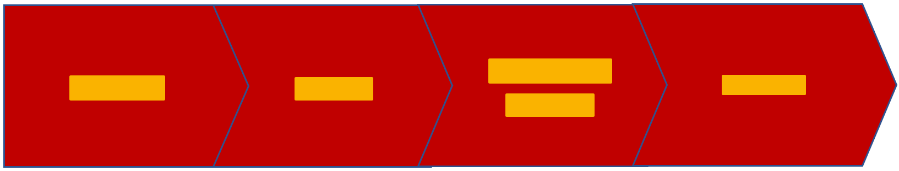

Using Site Templates to Manage Project Life Cycles
Note
This is an open-source article with the community providing support for it. For official Microsoft content, see Microsoft 365 documentation.
One possible use for Site Templates (which used to be called Site Designs) is to manage the life cycle of a unit of work. Site Templates allow us to do such things as create lists and libraries, apply a theme, install an add-in or solution, set permissions, etc. (See: Site template JSON schema)

We can also trigger a Power Automate Flow, so that opens up a whole additional world of possibilities. If we can’t accomplish what we need to do in the Flow, we can also call a custom Web Service from the Flow. In the Web Service, we can do anything CSOM opens up to us. In other words, Site Templates are the entry point we can use to do pretty much anything we need in our sites.
So what does this have to do with project life cycle? Well think about it like this:
- A project may start as just a proposal. In order to work on that proposal, we may need a library to store the information we are using to put the proposal together. (For some reason, many organizations I work with don’t see the value of connecting the proposal artifacts with the project itself. I do!)
- Once the proposal is accepted, we need some libraries to store our working documents.
- When the project starts to wrap up, we’ll want to collect our important learnings and high value artifacts for later reuse.
- Finally, when the project is truly done we may want to "archive" it.
Site Templates could help us move through this process:
- When we create the site, we might apply the Proposal Site Site Template. It might create a Proposal Documents library and associate the site with the Active Proposals Hub Site. Associating with the Hub site would set the theme to theme to "active proposal blue".
- If the proposal is accepted, we might apply the Project Site Site Template. This Site Template might instantiate a few Content Types, create a few Document Libraries and apply the Content Types, associate the site with the Active Projects Hub Site, and add the Executive Team to the Site Members. By associating the site with the Active Projects Hub Site, the theme would be set to "active project green",
- When the project is nearing completion, we could apply the Knowledge Capture Site Template. This might instantiate a few Content Types, create a Document Library to capture the important outcomes and apply the Content Types, set the theme to "knowledge capture teal", and add the KM Team to the Site Members.
- When the project wraps up apply the Archive Project Site Template, which disassociates the site from the Active Projects Hub Site and associates with the Archived Projects Hub Site. (This would naturally apply the "archived project grey" theme.)
This scenario may not fully match yours, but you probably could see something similar applying in your world. Because Site Templates are generally additive and always should be idempotent, each application of a new Site Template should have no detrimental effect on the existing containers of content.
Depending on what information you track in the site itself or in another site – perhaps in a Project Inventory list – you could even apply these Site Templates quasi-automatically. For example, apply the Knowledge Capture Site Template when the Project End Date is within two weeks. It may make sense to add an approval step so if something about the project is out of band, the project manager can decide not to progress yet.
There are opportunities to automate much of this as well. We could run a Flow on the Project Inventory list and when a project changes status or a key date is approaching, we could automatically apply the Site Templates. We could also use the search API to find sites with a specific piece or set of content and apply a Site Template with a Flow based upon that discovery.
In other words, if you have a business process you want to support, Site Templates could be an important piece of the puzzle. Moving a project through its life cycle is just one powerful example.
Principal author: Marc D Anderson, MVP